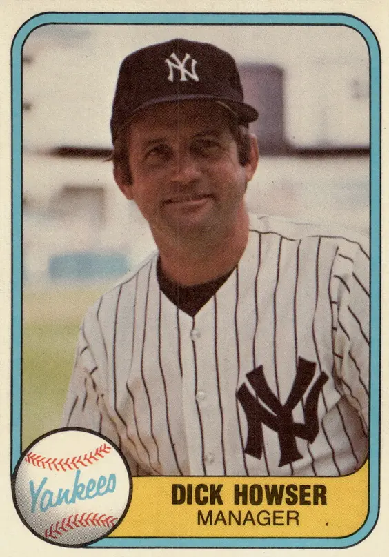

Dick Howser
Career Highlights & Facts
(Facts are AI-generated and may require verification)
- Earned consensus All-America honors as a student-athlete in 2 consecutive seasons.
- Managed a squad to a World Series championship title.
- Had a collegiate stadium named in honor of this individual.
Would you like to find out more about Dick Howser?
Player Biography
Dick Howser January 4, 2012 / in BioProject - Person 1960s All-Stars Managers Kansas City Royals 50th Anniversary / by admin This article was written by Alan Cohen “I will remember Dick Howser making that rush toward Bret Saberhagen the October before last, smiling like a kid, grabbing the most shining moment of a worthy baseball life.” 1 – Mike Lupica, June 18, 1987. “Well, I just recruited me a shortstop.” 2 – Legendary FSU baseball coach Danny Litwhiler remembering the 1955 tryout of unheralded walk-on player Dick Howser “He makes everything look so easy, and his attitude makes him easy to teach. He’s the kind who can be a success in anything he tries.” 3 – Danny Litwhiler, March 12, 1958. Dick Howser stood only 5-foot7 and weighed 150 pounds as an adult. The mighty mite, as he was called, had been encouraged to participate in sports by his father, H. D., and played American Legion ball at an early age. However, he was very short and didn’t try out for his high school team until he grew about six inches early in his junior year. Although he excelled in his junior and senior years at Palm Beach High School, with his Wildcats team winning the Class-AA State Championship in his junior year, the then 125-pounder was not heavily recruited by colleges. In 1954, as Howser recounted in 1979, he and two high school classmates, Burt Reynolds (the future actor) and pitcher Fred Kenney, “belonged to the same high school fraternity and one of the things we did was raise money to provide a scholarship of $500 for two years to a member who wanted to go on to school but couldn’t afford to. The other guys had athletic scholarships so I kind of won the money ($500) by default.” 4 Although offered a minor-league contract, he elected to go to college expecting to go into teaching. But he still kept his dream about playing baseball. The baseball program at Florida State was relatively new, but when he first tried out at Florida State, coach Danny Litwhiler (who was in his first year at FSU) said to pitching coach/team trainer Don Fauls, “That one is not big enough to be a batboy.” But Litwhiler said to Howser, “You got a glove. You got shoes. We’ll give you a tryout.” 5 Dick returned to the field with his gear, snatched up each ball hit to him and stung each ball pitched to him. In a manner of minutes, he evolved from walk-on to recruit. He hit .422 with an FSU record 38 hits as a sophomore in 1956 and became the first-ever consensus All-America student-athlete from the State of Florida in 1957. He was a repeat honoree in 1958. FSU Baseball’s new home, which opened in 1983, was renamed Dick Howser Stadium in 1988, and a bust of Howser is on the stadium grounds. The field in 2005 was named Mike Martin Field at Dick Houser Stadium to honor longtime FSU coach Mike Martin. Since 1987, the Dick Howser Trophy, established by the St. Petersburg Area Chamber of Commerce, has been awarded to the College Baseball Player of the Year. In 1985, Howser was at the top of the world after his Kansas City Royals won the World Series, defeating the St. Louis Cardinals in seven games. The following August, shortly after the All-Star game, he was diagnosed with brain cancer. He died within a year of the diagnosis. On July 3, 1987, his number 10 was the first number retired by the Kansas City Royals. In 2008, while renovating their ballpark, the Royals commissioned a spectacular bronze statue of Howser that is at Kauffman Stadium behind the fountains in right-center field. It was unveiled on Opening Day, April 10, 2009. Richard Dalton Howser was born to Hubert Dalton “Dutch” Howser and his wife Marjorie Felton Howser in Miami, Florida on May 14, 1936. Dick was the oldest of four children. He had a sister, Joyce, and two brothers, Tom and Larry. Tommy, one year younger than Dick, signed with the Kansas City A’s in 1956 and played two minor-league seasons. He started his first season at Fitzgerald, Georgia in the Georgia-Florida League and was, in mid-year, sent to Cincinnati’s Class-D affiliate, West Palm Beach, where he got to play in front of his family. The next season, he was with Port Arthur, Texas in the Class-B Big State League. The Howsers moved to West Palm Beach when Dick was a youngster. Dick’s father moved the family to West Palm Beach when Dick was a toddler. The elder Howser had been a baker in Miami but changed jobs when he took over an auto body shop after the move to West Palm Beach. Dick’s mother served as PTA president when he was in Junior High School. Dick Howser, in three years at FSU, batted .375. After his senior year at Florida State, he signed, on June 13, 1958, with scout Clyde Klutz of the Kansas City Athletics for a reported $22,000 and spent the balance of the 1958 season with the Winona, Minnesota A’s 6 in the Class-B Illinois-Indiana-Iowa League, batting .288. In the fall of that year, he played in the Florida Instructional League. The following season, the Class-B team relocated to Sioux City, and Dick batted .278. After batting .349 in 44 games with Sioux City in 1960, he was promoted to Double-A Shreveport in the Southern Association where his bat stayed healthy (.338), and he was on his way to Kansas City, becoming the first product of the Kansas City Athletics farm system to become a regular with the major-league squad. He made his debut with the Athletics on Opening Day in 1961, starting at shortstop against the Red Sox at Fenway Park . After going hitless in his first four at-bats, he doubled off Mike Fornieles in the eighth inning for his first major-league hit. He cemented his place in the lineup with an eight-game hitting streak (13-for-34) at the end of April and made a name for himself on the basepaths, challenging Chicago’s Luis Aparicio for the league lead in stolen bases. He eventually finished second to the White Sox shortstop, as Aparicio won his sixth straight stolen base title. After 60 games, manager Joe Gordon was dismissed and replaced by Hank Bauer on June 19. One of Bauer’s first decisions was to install Howser as team captain. 7 Dick was named to the All-Star team and played in the first of the season’s two All-Star Games. He entered the game, played in the winds of San Francisco’s Candlestick Park, as a defensive replacement in the eighth inning and struck out in his only at-bat. On September 10, in the first game of a doubleheader against the Twins at Kansas City, Howser had the first five-hit game of his career. His two-out third inning triple launched a three-run rally that gave the A’s a 4-0 lead. When the A’s broke the game open with eight runs in the seventh inning, Howser singled to lead off the inning and, later in the inning, drove in a pair of runs with a double. The double came off back-up first baseman Julio Becquer who took the mound when the game got out of hand. For the season, Howser posted what were to be career highs in batting average (.280), doubles (29), and stolen bases (37) and finished second to Boston’s Don Schwall in the rookie-of-the-year balloting. He was named the league’s best rookie by The Sporting News and was selected for the Topps All-Rookie team. But the A’s were years away from contention, finishing ninth in the American League. “The kid is a good runner. He’s got a good pair of legs and I can tell he loves to lay ball. He’s the kind of player that will improve from year to year. He’s the best I’ve seen. Every time I see him, he’ s stealing. ” 8 – Luis Aparicio, 1962. The next season, Howser played each and every inning of his team’s first 72 games before sustaining an injury to his glove hand while taking a throw in a game against Chicago. In the first inning of the game on June 23, he tagged out Luis Aparicio who was trying to steal second base. After finishing that game and playing a doubleheader, in pain, the next day, x-rays showed that Howser had sustained a broken bone in his left thumb. He was out of the starting lineup for the balance of the season. The best game of his abbreviated season came on June 16. The A’s beat the Twins 6-2 for their fifth consecutive win and Howser’s three hits included a second-inning RBI triple and a fifth-inning inside-the-park homer. Little more than a week later, things had changed. The A’s had hit a cold snap, losing seven straight and falling from seventh to ninth place. And Howser had felt the snap in his left hand. Dick came off the DL in August, but only made 11 appearances as a pinch runner during the season’s remaining weeks. His batting average for the season was .238 at the time of his injury, he had 19 stolen bases, and Aparicio had 13 swipes. Although he missed most of the season, Howser finished fifth in the league in stolen bases. The A’s finished in ninth place, 24 games from the promised land. He was healthy as the 1963 season began, appearing in each of his team’s first 10 games before again falling prey to injury. Howser was batting only .211 and was given the day off on April 21. The following day, in batting practice, he injured himself taking a swing, cracking two ribs, prompting a return to the DL. By the time he had healed, Wayne Causey had taken over at shortstop, making Howser expendable. He was dealt, on May 25, 1963, along with Joe Azcue , to the Cleveland Indians for catcher Doc Edwards and $100,000. In his first 27 games with the Tribe, the team went 18-9 with Howser stealing eight bases and scoring 19 runs. But then a series of pulled leg muscles caused him to miss several stretches of games. In the offseason, Howser subscribed to a training regimen to strengthen his leg muscles and, in his first full season with the Indians, 1964, he rebounded and posted a .256 batting average with a career-high 52 RBIs in a career high 162 games. He was also the only Indians player to score more than 100 runs. His 101 runs scored placed him second in the American League. He also led his team in hits (163) and triples (4). He was a bunter par excellence, tying Bobby Richardson for the league lead with 16 sacrifices. Manager Birdie Tebbetts in speaking of Howser said, “This kid runs, he handles the ball, he’s coachable, knowledgeable . . . He suits me fine. I’ll tell you something else about him. He’s a 100 percent effort guy – and I appreciate that kind.” 9 Unfortunately, the Indians lacked for offense and finished in a sixth place tie with the Minnesota Twins, 20 games behind the first place Yankees.. Howser was not able to replicate his 1964 success in the two following seasons in Cleveland. In 1965, his hitting tailed off, he injured his ankle on July 20, and he lost the shortstop position to Larry Brown . For the season, Howser played in only 107 games, and batted .235. The following season, he was given an opportunity to regain his old position when Brown was injured in a collision with Leon Wagner on May 4. Howser started 16 consecutive games at shortstop from May 5 through May 22, batting .241.The Indians only played .500 ball during that span and opted to move Chico Salmon into the position. Over the balance of the season, Howser only played in 46 games (22 starts), and his batting average shrunk to .229 for 1966. On December 20, 1966, was traded to the New York Yankees for minor-league pitcher Gil Downs and cash. The Yankees’ need for a new shortstop, at least in a backup role, was hastened by the resignation of Tony Kubek and the unavailability of prospect Bobby Murcer , who was in the Army, at the position. When Howser first suited up with the Yankees in 1967, the franchise was in the third year of its fall from greatness. Mickey Mantle , at age 35 a shell of his former self, led the team with 22 homers. Howser proved a more than ample fill-in when injuries sent regulars to the bench. He filled in for Horace Clarke at second base and Charley Smith at third in the early going and appeared in 24 of the team’s first 30 games, batting .300. With Ruben Amaro taking over at shortstop, and the return of Clarke and Smith, Howser only started 16 games (filling in for Clarke in July) after May 21. His season was abbreviated, once again by injury, when he broke his arm when making a double play in a game against the Orioles on July 16. For the season, he played in 63 games, batting .268. His average was better than virtually all of the regulars. Only Clarke (.272) was higher amongst those players with more than 100 at-bats. The Yankees finished in ninth place. The following year, 1968, was Howser’s last as a player. He appeared in 85 games, mostly as a pinch-hitter, and only batted .153. For his career, he batted .248 in 789 games. He stole 105 bases in 139 attempts. In 1969, Howser took over as the Yankees’ third-base coach and served in that capacity through 1978. The first few years coaching with the Yankees were marked by a painful rebuilding process and many of the pieces were in place when George Steinbrenner took over the team in 1974. Howser first managed the Yankees, for one day, in 1978 after Billy Martin was fired and Bob Lemon came on board as manager. In the fall of 1978, Howser left the Yankees and returned to FSU to coach the Seminoles, replacing Woody Woodward , who had taken a position with the Cincinnati Reds organization. Howser and wife Nancy relocated to Tallahassee and became a vital part of the community over the next several years, although Howser returned to New York after only one year at the helm of FSU. During the 1979 season, Howser’s team went 43-15-1 and was selected to play in the East Regional of the NCAA Tournament. Unfortunately, the squad lost to Florida and Delaware, ending Howser’s only season as coach at his alma mater. “It would be hard for anyone to turn down the New York Yankees’ managing job, especially when you’ve been part of the organization for12 years. I’m a Yankee. I know the players fairly well. I read the box scores everyday this summer and tried to follow the team very closely.” 10 – Dick Howser, October 29, 1979. While Howser was at FSU, Billy Martin returned as Yankees manager, replacing Bob Lemon 65 games into the 1979 season. Martin, in and out of controversy, was dismissed after the 1979 season, pursuant to a brawl with a marshmallow salesman, and Steinbrenner lured Howser back to the Yankees as manager. “Dick was an intense competitor who played beyond his ability. We may not have had the right chemistry, but I admired him greatly. He battled cancer the same way he battled the opposition. Even though we couldn’t work together, our friendship remained. I’m going to miss him greatly.” 11 – George Steinbrenner, June 18, 1987 In parts of seven seasons as a manager at the major-league level, Howser was highly successful, never finishing lower than second place during the first six years of his managerial career. His final season as a manager, 1986, was abbreviated by a foe far greater than any baseball opponent, and the Royals were in fourth place when Howser was forced to step aside in July due to illness. His teams won three divisional championship and one World Series. In 1980, buoyed by Tommy John ’s 22 wins and Reggie Jackson ’s 41 homers, Howser led the Yankees to the AL Eastern Division championship with a 103–59 record. For most of the season, the ride was smooth and there was little in the way of controversy between owner and manager, a very unusual circumstance for the Yankees. There was also the leadership displayed by a new Yankee, 34-year-old Bob Watson , who was acquired in the offseason after 16 major-league seasons in which he had never been to the postseason. On August 15, after the Yankees had lost four of six games and seen their league lead shrink to 2.5 games, Watson called a team meeting. It lasted only 19 minutes, and there was a general feeling that the players would do what had to be done to win. That evening, they defeated the second-place Orioles 4-3, the win going to John, and the big blow being a two-run homer by Jackson. A beaming Howser said after the win that “We may have another meeting tomorrow. It was probably part of what happened in the game. There was a little more enthusiasm on the bench. It’s bad to start feeling sorry for yourself in this game.” 12 Only the Baltimore Orioles stood in the way of the Yankees winning the AL East, and New York clinched the division title in their 160th game. However, the team lost three consecutive games to the Kansas City Royals in the best-of-five American League Championship Series, and it was in the LCS where Howser and owner Steinbrenner feuded. Steinbrenner was highly critical of Yankee third-base coach Mike Ferraro ’s decision to send Willie Randolph home on a double by Watson with two outs in the top of the eighth inning and the Yankees down 3-2. Randolph was thrown out at the plate. Steinbrenner wanted Ferraro fired, but Howser supported his coach. Steinbrenner fired Howser shortly after the team lost the ALCS. “Dick didn’t say a lot; he just expected us to work hard. His famous words when we got down were, ‘just get it done.’” 13 – John Wathan The next year, the Kansas City Royals, his postseason rival in the previous season, hired Howser to manage on August 31. After play had resumed following that season’s work stoppage, the Royals had gone 10-10 under Jim Frey . Howser managed the last 33 games of the season as the Royals went 20-13 to finish in first place in the AL West for the second part of the split-season. At the end of the season, the Royals and Oakland were matched up in a best of five series to determine who would go on to the American league Championship Series. The overmatched Royals lost to the A’s in three games. With the Royals, Howser was a quiet leader. In his time with the Royals, Howser’s teams went 404-365 (.525). They finished second in 1982 and 1983. Although they finished second in 1983, their record was a disappointing 79-83, and they finished 20 games behind the White Sox. During the offseason between 1983 and 1984, a drug investigation led to the arrest, incarceration and suspension of four 1983 Royals players including two starters, Willie Wilson and Willie Mays Aikens . Wilson’s suspension was lifted in May 1984, but Aikens did not return to the Royals. The Royals obtained first baseman Steve Balboni from the Yankees in what turned out to be a fortuitous move. As the 1984 season began, the Royals were in a bind. Not only was Wilson out of the lineup, but George Brett was coming off an injury and didn’t see action until May 18. The pitching staff included three young pitchers (rookies Bret Saberhagen and Mark Gubicza , joined 1983 September call-up Danny Jackson ) and not much was expected of the team. As late as June 23, the Royals were in seventh place. By Labor Day, they had moved into second place, and a 16-9 record after Labor Day propelled them to the AL West championship. Unfortunately, Howser, whose teams had been swept in 1980 and 1981, saw his postseason record go to 0-9 when Detroit swept the Royals in the best-of-five ALCS to advance to the World Series. “If we do have the Cy Young Guy (Bret Saberhagen) and the MVP guy (George Brett),it’ll keep me around longer.” 14 – Dick Howser, October 5, 1985 in the clubhouse after the Royals clinched the AL West. In 1985, the Royals repeated as AL West champions, clinching the title with a come-from-behind 6-4 win in 10 innings on the next to last day of the season, and faced the Toronto Blue Jays in the ALCS. The Blue Jays, in their first postseason appearance won the first two games, which were played in Toronto. Game Three at Kansas City was dominated by George Brett of the Royals. Prior to Game Three, Dick Howser, as a manager, had lost 11 consecutive postseason games, and it looked for a while, that it would be an even dozen. It was not Bret Saberhagen’s night. Staked to a 2-0 lead, the 20-6 Cy Young Award winner imploded in the fifth inning yielding two singles, a double, and a pair of homers. He only recorded one out the Blue Jays took a 5-2 lead. The Royals, on George Brett’s sixth-inning two-run homer tied the game. The Royals lineup included Steve Balboni, who had begun his career with the Yankees, but had proven expendable when Don Mattingly joined the team. Balboni’s tendency to strike out was annoying to some, but Howser displayed patience in letting the big 6-foot-3 guy play. Balboni had 36 homers and 88 RBIs for the 1985 Royals. During the series against Toronto, Balboni said, “I’ve got a chance to play now, and that’s the whole thing.” 15 Balboni came up in the eighth inning of Game Three and, with two out singled in Brett with what turned out to be the winning run. Brett, the offensive star of the game, had reached base with his fourth hit of the encounter. The Royals stayed alive and, after falling behind in the series three games to one, won the final two games at Toronto to advance to the World Series. In the World Series, the Royals were matched up against the St. Louis Cardinals. The heavily favored Cardinals were put at a disadvantage when leadoff batter Vince Coleman suffered a leg injury when the automatic tarpaulin at St. Louis inadvertently came into his path when he was running off the field prior to the fourth game of the NLCS. Although the Cardinals’ run production was seriously hindered by Coleman’s absence, they won the first game of the World Series by a 3-1 margin. The Royals’ top reliever in 1985 was Dan Quisenberry , who led the American League with 37 saves. It was a game in which Quisenberry was not used that temporarily caused headaches for Howser. In Game Two of the World Series, the Royals took a 2-0 lead into the ninth inning and Howser elected to stay with starter Charlie Leibrandt . The left-handed Leibrandt was pitching a masterpiece. Over the first eight innings he had given up only two hits and had retired the last 13 batters he faced. When Willie McGee doubled to lead off the ninth inning, Leibrandt retired the next two batters he faced and was one out away from the win. Up stepped righty Jack Clark . Rather than bringing in the right-handed Quisenberry, Howser chose to stay with Leibrandt. The move, or lack thereof, backfired as Clark doubled and the Cardinals went on to score four ninth- inning runs to take a two-games-to-none lead in the series. The Royals eventually were down three games to one but rallied behind the strong pitching of Danny Jackson to avoid elimination in Game Five. Howser wasn’t worried when his team was down in what was known as the I-70 Series against the cross-state rival Cardinals. After the Royals 6-1 win in Game Five, Howser said, “I can’t explain it. It’s not me and it’s not the organization. They respond well to this pressure. I don’t say anything. I just line them up and let them play.” 16 In Game Six, Leibrandt was back on the mound facing Danny Cox and the game was scoreless through seven innings. The Cardinals broke the ice in the eighth inning and loaded the bases with two out. Howser brought in Quisenberry who put out the fire. Quisenberry pitched a scoreless top of the ninth to keep the score at 1-0. In the bottom of the inning, the Royals had runners on first and second with two out. Hal McRae was at the plate, and Quisenberry was in the on-deck circle. After a passed ball advanced the runners to second and third, Cardinal manager Whitey Herzog ordered an intentional walk. Howser countered with a move of his own, ordering Dane Iorg to pinch hit for Quisenberry. This moved worked out just fine as Iorg singled to right field, scoring two runs and forcing Game Seven. The Royals scored early and often, but Darryl Motley ’s two-run homer in the second inning was all that World Series MVP Bret Saberhagen would need as he pitched an 11-0 shutout and the Royals won the World Series. At a White House ceremony, Howser presented President Ronald Reagan with a Royals jacket, hat, and bat. For the Royals, it was their only World Series win until 2015. As the 1986 season began Howser’s 364 wins as a Royals manager put him in second place behind Whitey Herzog’s 410. It was pretty much a foregone conclusion that he would eclipse the record by the end of the season. But that would not happen. As June turned into July, the Royals went into a skid losing 11 consecutive games between June 27 and July 8. But Howser remained calm, as he always did, as his team slipped to fourth place in the AL West, 8 1/2 games behind the division leaders. Speaking with reporter Bob Gretz, Howser said, “But it’s coming (the end of the team’s futility). It (the team’s performance) will get there. I don’t know when. Maybe tomorrow.” Gretz went on to say: “Always Tomorrow: That could be the epitaph on Howser’s tombstone. How better to explain the methods of a man whose team was twice just a game away from elimination last year in the playoffs and World Series? Still it won.” 17 The Royals won three of their next five games and headed into the All-Star break. The All-Star Game was played on July 15, and Howser led the American League to a 3-2 win. After the game, Howser, who had been having headaches for the prior two weeks, was examined on July 17 and it was determined that he had a brain tumor. “I look at this as just another ballgame. He’s the batter, he’s the runner, and he’s got to score. And he’s going to win this game. I talked to him on the phone the other day and he didn’t even sound like he’d been through anything. He sounded like he was back to normal.” 18 – Marjorie Howser, July 30, 1986 On July 22, 1986, Howser underwent surgery at St. Luke’s Hospital in Kansas City. Surgeons had found a malignant tumor in the left frontal lobe of Howser’s brain. “ I ’ve been pushing and pushing since the first operation in Kansas City and the second operation in Los Angeles (December 1996). I couldn’t do it.” 19 – Dick Howser, February 1997. Howser attempted a comeback the following season. He arrived at spring training on February 21. He quickly found he was physically too weak and abandoned the attempt after just two days. He resigned his position and Billy Gardner took over as manager of the Royals. Experimental brain surgery was performed on Howser on March 20 in Pasadena, California. Surgeons injected cancer-killing cells known as lymphocytes, into the surgical cavity. 20 Less than three months later, Dick Howser was dead. Howser was survived by his wife Nancy and his twin daughters from a previous marriage. He met his first wife Michelle Ann Metzger in 1961, while with the Kansas City Athletics. They were married in February 1964 and had twin daughters Jana and Jill on November 28, 1964. Dick and Michelle (who died in an automobile accident in 1980) subsequently divorced, and Dick married Nancy, Kate Stephenson, an interior designer, on January 15, 1972. Jana became the Executive Vice-President of Development at the National College Baseball Museum and Hall of Fame in Lubbock, Texas, and Dick was named to that Hall of Fame in 2008. Jill and her husband are the parents of two daughters, Melody and Michelle. After his death on June 17, 1987, Dick Howser was laid to rest at Memory Gardens Cemetery in his adopted hometown of Tallahassee, near the campus of his alma mater, Florida State University, and the stadium which bears his name. Sources In addition to the sources shown in the Notes, the author used Baseball-Reference.com, Newspapers.com, GenealogyBank.com, Ancestry.com, and: Donnelly, Joe. “Dick Howser: Kaycee Captain,” in Baseball Stars of 1962 (New York, Pyramid Books, 1962), 122-132. “FSU Soph Howser Tabbed for Bright Diamond Career,” Palm Beach Post , April 27, 1956: 18. Henry, Jim. “Seminole Scrapbook: Jana Howser celebrates Dad’s Legacy,” Tallahassee Democrat , April 14, 2016. Mehl, Ernest. “A’s Farm System Takes Bows Over Kid Howser,” The Sporting News , November 8, 1961: 25. Schneider, Russell. “Howser Shuts up Critics with Slick Plays at Shortstop,” The Sporting News , April 15, 1965: 25. Stilley, Aaron. “25th Anniversary: Remembering Dick Howser,” I-70 Baseball, October 23, 2010. Stilley, Aaron. “A Conversation with Jana Howser,” I-70 Baseball, November 21, 2010. Twyman, Gib. “Howser Has Learned to Roll with Punches,” Kansas City Star , October 22, 1985: 1C. Notes 1 Mike Lupica, “A Full Baseball Life Graced by Dignity,” New York Daily News , June 18, 1987: 78. 2 Gerald Ensley, “Dick Howser: He Won Friends with his Savvy, Wit, and Loyalty,” Tallahassee Democrat , June 18, 1987: D1. 3 “Deceptive Dick Howser Set for Final Spring at FSU,” Palm Beach Post , March 13, 1958: 14. 4 Larry Fox, “Howser a Legend in Tallahassee,” New York Daily News , November 1, 1979: 23C. 5 Ensley. 6 The Three-I League added three new teams in 1958. They were Rochester, Green Bay, and Fox Cities. The Rochester team relocated to Winona on June 29. 7 John E. Peterson, The Kansas City Athletics: A Baseball History 1954-1967 (Jefferson, North Carolina, McFarland Publishers, 2003), 144. 8 Jerome Holtzman, “Two Greyhounds Threaten Theft-King Looey; Howser, Wood Endanger Six-Year Reign of Chisox Swifty,” The Sporting News , June 2, 1962: 5. 9 Russell Schneider, “Birdie’s New Ballad: We’ll Win with Howser,” The Sporting News , January 2, 1965: 9. 10 “Howser to Manage Yanks,” Tallahassee Democrat , October 29, 1979: 1A. 11 Bill Madden, “Boss’s Mistake: Firing Howser,” New York Daily News , June 18, 1987: 79. 12 Phil Pepe, “Quiet Meeting May Have Saved Yank’s Year,” New York Daily News , August 17, 1980: Sports-8. 13 Denny Mathews (with Matt Fulks), Denny Matthews’s Tales from the Royals Dugout (Champaign, Illinois, Sports Publishing, 2006), 65. 14 Bob Nightengale, “Royals Bask in the Glow of their Championship Season,” Kansas City Star , October 6, 1985: Sports-12. 15 Rich Chere, “Balboni Handling Playoff Pressure,” Newark Star-Ledger , October 9, 1985: 90. 16 John Sonderegger, “Royals’ Reverse Logic Works with Another Win,” St. Louis Post Dispatch , October 26, 1985: 6C. 17 Bob Gretz, “Howser Remains on an Even Keel as Royals Ship Goes Off Course,” Kansas City Star , July 8, 1986: 1B. 18 Dave George, “Howser’s Mother Says Tumor Like ‘Just Another Ballgame’,” Palm Beach Post , July 30, 1986: 1C. 19 Robert MCG, Tomas, Jr., “Dick Howser Dies at 51; Ex-Manager of Royals,” New York Times , June 18, 1987. 20 Dave George, “Howser ‘Alert’ After Third Surgery for Tumor,” Palm Beach Post , March 21, 1987: 1C. Full Name Richard Dalton Howser Born May 14, 1936 at Miami, FL (USA) Died June 17, 1987 at Kansas City, MO (USA) Stats Baseball Reference Retrosheet If you can help us improve this player’s biography, contact us . Tags 1960s All-Stars · Managers · Kansas City Royals 50th Anniversary Share this entry Share on Facebook Share on X Share on LinkedIn Share on Reddit Share by Mail
Career Totals
| WAR | AB | H | HR | BA | R | RBI | SB | OBP | SLG | OPS | OPS+ |
|---|---|---|---|---|---|---|---|---|---|---|---|
| 9.3 | 2483 | 617 | 16 | .248 | 398 | 165 | 105 | .346 | .318 | .664 | 87 |
Statistics via Baseball-Reference.com
The Original Clue